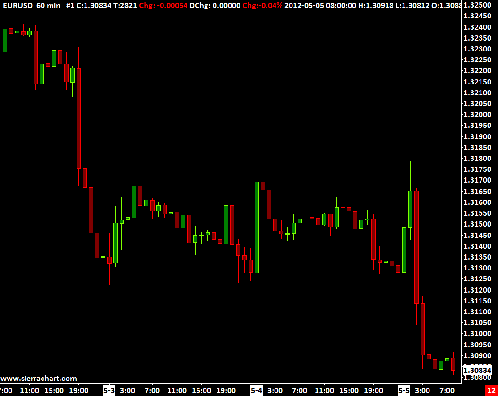

Home >> (Table of Contents) Supported Data and Trading Services >> Sierra Chart Real Time and Historical Forex and CFD Data Service
Sierra Chart Real Time and Historical Forex and CFD Data Service
{kind=link}
- Introduction
- What is Included
- Setup Instructions
- Symbols
- Forex/CFD Market Data and Data Recording Modes
- Volume Data for Forex and CFD Markets
- Historical Daily Data Session Times
- Live Forex Trading
- Alternative to Cash Index Data
- FXCM CFD Product Guide
Introduction
Sierra Chart offers a high quality real-time and historical Forex and CFD (Contract for Difference) Data service.
The service is supported by redundant data servers and advanced real-time server software. All maintained and developed by Sierra Chart. A large number of Forex pairs and CFDs are available.
Historical Daily and Intraday data is provided.
Detailed data for Intraday charts is available back to December 2007.
CFD stands for Contract For difference. CFDs provide market data for indexes of 12 stock exchanges around the world, Crude oil, Gold, Silver, Platinum, Palladium, Natural Gas, Copper, Bund, and US dollar index markets. These are not futures contracts but can be used as an alternative to them. The prices that these CFD symbols provide will not exactly match the futures contract price or the cash index price in the case of stock indexes, but they will be close.
What is Included
- Streaming Real-Time Data: Yes.
- Historical Intraday Data: Yes. Available back to December 2007. For at least the past 2 Years, the historical Intraday data is tick by tick. Prior to that the historical Intraday data is in 4 second time frame units.
- Historical Daily Data: Provided by Sierra Chart. The data is sourced from FXCM. The opening price of each Daily bar begins at 5 PM US Eastern time. The number of years of history available depends upon the symbol. For symbols which are not listed in File >> Find Symbol, the historical Daily data is downloaded from the Sierra Chart Historical Daily Data service.
- Historical Bid Trade Volume and Ask Trade Volume: Yes.
- Live Trading Services: No. For Forex and CFD trading use the LMAX Trading Service service.
- Simulated Trading: Yes.
- Order Types Supported: All.
- Server Managed OCO (Order Cancels Order): No.
- Automated Trading (applies to Live or Simulated): Yes.
- Market Depth Data: No. For market depth data for the Forex markets, and also various other markets like equity index, precious metals, and oil, use the Delayed Exchange Data Feed which provides delayed futures data. This data feed provides market depth data.
- Integrated with other Data and Trading Services in Sierra Chart: Yes
- Efficient Market Data with Processing on Background Thread: Yes.
Setup Instructions
- Select Global Settings >> Data/Trade Service Settings on the menu.
- In the Service list box, select SC Data - All Services. Additionally, the Sierra Chart Real-time and Historical Forex/CFD Data Service is integrated with all the other Trading services Sierra Chart supports meaning this data is still accessible when using those Trading services in Sierra Chart.
- Press OK.
- Select File >> Connect to Data Feed.
- If there are messages added to the Message Log indicating a problem connecting to the Data server, or you cannot connect, then refer to Help Topic 1.2.
- To open a Historical or an Intraday chart, select File >> Find Symbol on the menu. Select a symbol from the CFD or Forex lists. This service provides historical and real-time data only for the symbols in those lists. To open a chart, press the Open Intraday Chart or Open Historical Chart button to open the type of chart you want.
- Continue with Step 3 on the Getting Started documentation page.
{kind=link}
Symbols
For a list of symbols you can use with the Sierra Chart Real-Time and Historical Forex and CFD Data Service, select File >> Find Symbol in Sierra Chart. The symbols are in the Forex and CFD lists. Any other symbols listed are provided by other Sierra Chart data services.
With Intraday charts you can appended various suffixes like -BID or -BIDASK to the symbol when opening it from File >> Find Symbol. In the case of -BIDASK, the real-time processed data will include the Bid and Ask prices in the chart bars rather than just the average of the Bid and Ask. This symbol suffix cannot be used with Historical Daily charts. For the documentation for all of the available suffixes, refer to the Data Recording Modes.
Keep in mind if you do not use the symbol suffix, -BIDASK, you will always still see the current Bid and Ask displayed in a chart along the top line of the chart and you can enable Trade >> Draw DOM Graph on Chart, to get the Bid and Ask lines graphically drawn on the right side of the chart. Or you can enable Chart >> Show Bid and Ask Lines to get the Bid and Ask lines also drawn on the chart, but with less detail.
For a complete list of symbols for Historical Charts, refer to the Historical Daily Forex Symbols page. The ^ character does not need to be entered, although it can be. The symbols are 6 letters each. More than 10 years of Historical Daily data is available.
Currency pairs are written by concatenating the ISO currency codes (ISO 4217) of the base currency and the counter currency, separating them with a slash character. Often the slash character is omitted. A widely traded currency pair is the relation of the euro against the US dollar, designated as EURUSD. The quotation EURUSD 1.2500 means that one euro is exchanged for 1.2500 US dollars.
Forex/CFD Market Data and Data Recording Modes
The Forex and CFD markets only provide Bid and Ask prices. There are not last trade prices provided from the source data feeds. This is typical of these types of markets. The Bid and Ask spread that you see, is set by the data feed source. The primary Forex and CFD data feed we offer is from FXCM.
Therefore, by default the price bars and last trade prices you see in a Forex or CFD chart are based on the midpoint or average of the Bid and Ask quotes .
For example, when using the symbol EURUSD, the values of the price bars and last trade price will be based on the midpoint or average of the Bid and Ask quotes.
To see the full precision of the Bid and Ask prices, to understand the resulting average value, increase the number of decimal places for the Price Display Format for the chart.
There are several other Data Recording Modes which can be used by appending a suffix to the symbol when opening a chart. They are as follows:
- Symbol-BID: Example: EURUSD-BID
- Symbol-ASK: Example: EURUSD-ASK
- Symbol-BIDASK: Example: EURUSD-BIDASK
For complete details, refer to Data Recording Modes.
The Date and Time for each bar the chart is the starting time of that bar. For more information, refer to Time Scale on the Working with Charts page.
Volume Data for Forex and CFD Markets
Since there is no central exchange for the foreign exchange markets or CFD (contract for difference) markets, generally there is no volume data available in these markets.
However, in the case of Intraday charts, Sierra Chart is able to provide volume data. The method by which Sierra Chart uses to provide the volume data is based upon the number of Bid and Ask price changes that are received from the particular Forex and CFD quote provider. For the Sierra Chart Forex/CFD Data Service, the data feed comes from FXCM.
For every price change, the volume is incremented by 1. Therefore, it is not a true measure of actual trading volume. It only provides an indicative measure.
Bid Trade Volume (Bid Volume) and Ask Trade Volume (Ask Volume) are also provided by Sierra Chart for these markets. When there is a change with the Bid and Ask prices, if the prices have risen, then Ask Trade Volume is incremented by 1. If the prices have declined, then Bid Trade Volume is incremented by 1.
Historical Daily Data Session Times
The Session Times for the Historical Daily data provided by the Sierra Chart Real-time and Historical Forex/CFD Data Service cannot be changed. The opening time for a Daily chart bar is 17:00:00 US Eastern time. The ending time for a Daily chart bar is 16:59:59.999 US Eastern time.
Therefore, in historical Daily charts, the Time Zone for these charts must always be a US time zone. Otherwise, there can be an issue where the high and low for the last displayed bar is not correct.
Live Forex Trading
When using the SC Data-All Services Service within Sierra Chart, the Forex and CFD data is provided by FXCM.
If you want to do live Forex and CFD trading, then refer to the LMAX Trading Service page for instructions.
Alternative to Futures Data
When you require cash index data and you do not want to pay extra for the real cash index data which is provided from the Sierra Chart Exchange Data Feed, then the Sierra Chart Real-Time and Historical Forex / CFD Data Service is an alternative.
This service provides real-time data for the cash prices for most major equity indexes, gold, silver and oil.
Below is a table of the equivalent Sierra Chart Real-Time and Historical Forex / CFD Data Service symbols for major equity indexes, gold, silver and oil.
The below symbols are listed in File >> Find Symbol >> CFD - FXCM.
| SC Forex Data Symbol | Equivalent To |
|---|---|
| GER30 | FDAX EUREX (German DAX index) |
| US30 | $DOWI (Dow 30 Industrials) |
| NAS100 | $IUXX (NASDAQ 100 index) |
| SPX500 | $INX (S&P 500 index) |
| UKOil | Brent Crude Oil (BRN) ICE |
| USOil | Crude Oil WTI (CL) CME |
| Bund | FGBL EUREX |
| XAUUSD | Spot Gold |
| XAGUSD | Spot Silver |